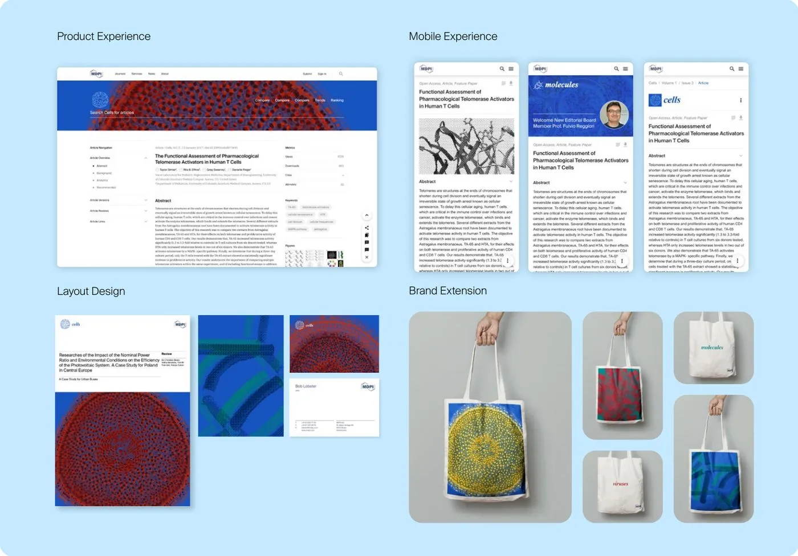
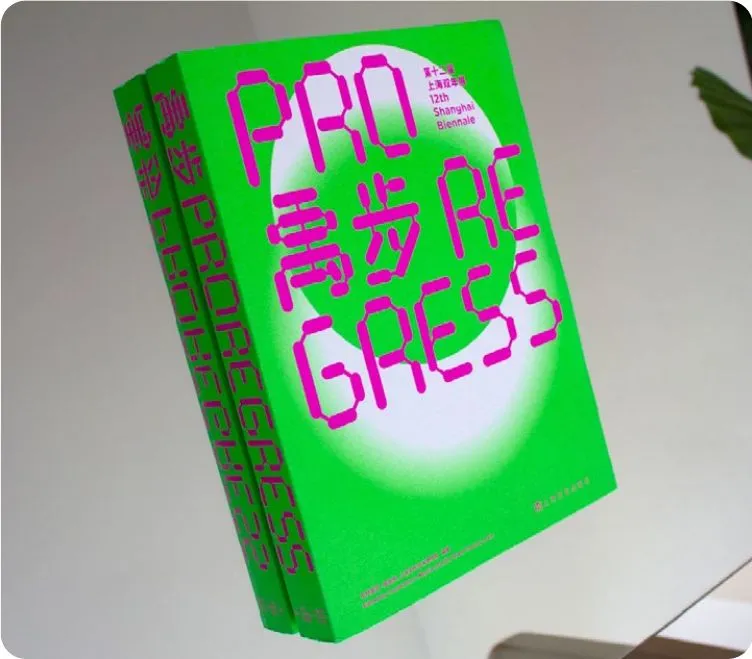
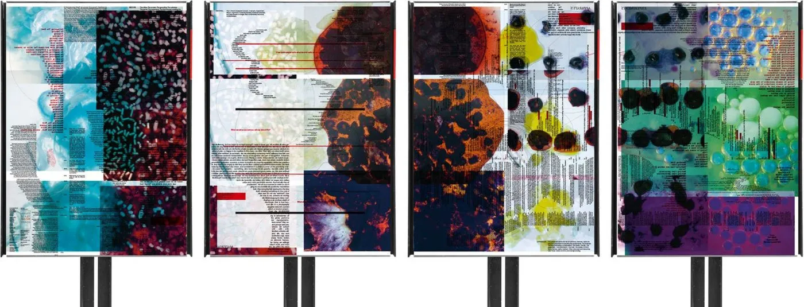
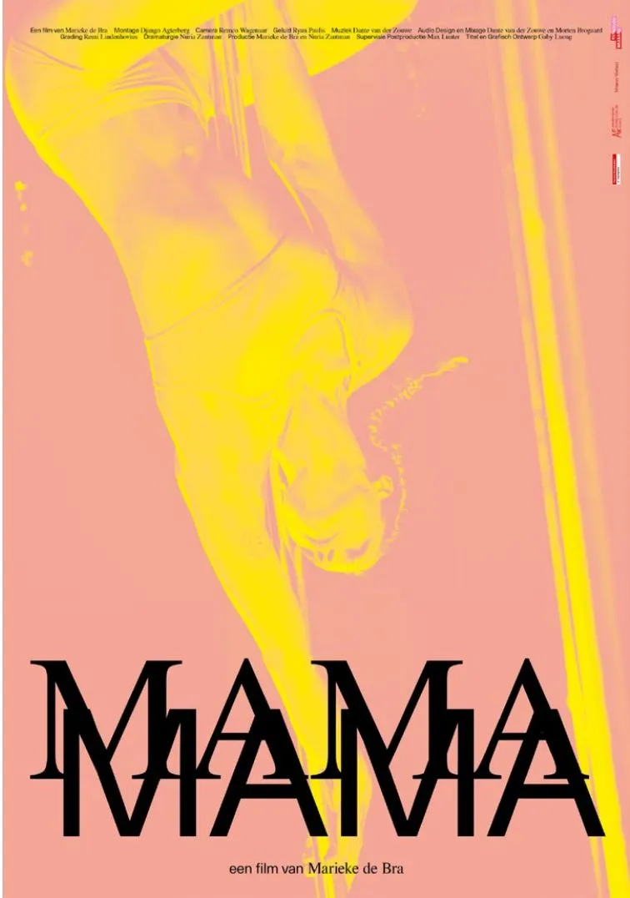

UX & Product Designer · Basel, Switzerland
Hi, I’m Gaby. I’m a UX & Product Designer and I bring clarity to systems, and courage to visuals.
Selected projects
UX & Product Design

1MDPI Books
Redesign of MDPI’s open access book platform. Researchers couldn’t find the books they needed and had no time to browse.
- Role
- UX & Product Lead, end to end
- Year
- 2023–2024 · 14 months

2MDPI Design System
One visual and design system for a publisher with 8 initiatives in 17 locations, each of which had built its own look.
- Role
- Brand & System Designer, print and digital
- Year
- 2021–2024 · 4 years

3MDPI User Hub
Research behind MDPI’s unified account dashboard. Satisfaction scores looked healthy, yet 1.28M visits dropped off in the submission flow.
- Role
- UX Research Lead
- Year
- 2025 · 4 months
Graphic roots
UI & Visual Work

4Shanghai Biennale 2018
Visual identity and catalogue for the 12th Shanghai Biennale at Power Station of Art. Freelance with thonik, Amsterdam.
Art Direction · Identity · Book Design
5Living Matters
Poster series with Berlin artist Eva Keller. Riso-printed on thin paper so text and imagery bleed through front to back.
Typography · Editorial · Print · 2020–2021
6MAMA Documentary
Title design and poster for Marieke de Bra’s film. The typography moves between control and vulnerability, like she does.
Film Titles · Poster · Motion · 2022About
I’m a designer born and raised in Basel. I craft elegant, functional systems that turn complexity into experiences people can trust and use.
When I’m not designing, I’m probably on a hike, training BJJ, enjoying good food or tracking down good architecture and museums somewhere.
Contact